Analyse des données
Nos requêtes SQL pour mieux comprendre les ventes, les produits et les clients de KDou.
Sujet de la SAE sur laquelle nous avons travaillé :
SAE2026Présentation de notre analyse
Après l'exploration de la base, nous avons réalisé des requêtes plus détaillées pour calculer des indicateurs et répondre aux questions de la SAE.
2 - Chiffre d'affaires des fournisseurs de l'UE
Objectif
On cherche le chiffre d'affaires total généré par les produits provenant de fournisseurs de l'Union européenne.
Notre démarche
On utilise les tables DetailCommande, Produit, Categorie, Fournisseur et Pays. Le montant de chaque ligne de commande est calculé avec la quantité, le coût d'achat, le coefficient de marge et la remise.
Première requête : le CA de chaque ligne de commande
SELECT
Produit.NomProd,
DetailCommande.Quantité,
Produit.CoutAchat,
Categorie.CoefMarge,
DetailCommande.[Remise (%)],
DetailCommande.Quantité
* Produit.CoutAchat
* Categorie.CoefMarge
* (1 - DetailCommande.[Remise (%)]) AS CA_Produit
FROM
(DetailCommande
INNER JOIN Produit
ON DetailCommande.[Réf produit] = Produit.RefProd)
INNER JOIN Categorie
ON Produit.CodeCateg = Categorie.CodeCateg;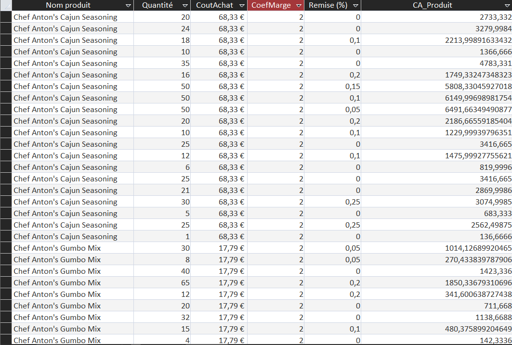
Calcul intermédiaire réalisé par Marc.
Un même produit peut apparaître plusieurs fois car les quantités et les remises varient selon les commandes. Il faut ensuite additionner les montants et filtrer les fournisseurs de l'UE.
Requête finale
SELECT
SUM(
DetailCommande.Quantité
* Produit.CoutAchat
* Categorie.CoefMarge
* (1 - DetailCommande.[Remise (%)])
) AS CA_Total_UE
FROM
(((DetailCommande
INNER JOIN Produit
ON DetailCommande.[Réf produit] = Produit.RefProd)
INNER JOIN Categorie
ON Produit.CodeCateg = Categorie.CodeCateg)
INNER JOIN Fournisseur
ON Produit.NoFour = Fournisseur.NoFour)
INNER JOIN Pays
ON Fournisseur.NoPays = Pays.NoPays
WHERE
Pays.UE = "Membre";Résultat obtenu
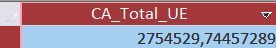
2 754 529,74 €
Nous obtenons environ 2,75 millions d'euros de chiffre d'affaires sur les produits fournis par des fournisseurs de l'UE.
Une difficulté rencontrée par Maxim
Maxim a également réalisé cette requête. Il explique avoir d'abord obtenu un montant incorrect en construisant le calcul, avant de retrouver le même résultat final.
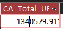
Ancien résultat incorrect.
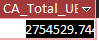
Résultat corrigé.
Résultat de Killian
Killian a aussi calculé le CA des fournisseurs de l’Union européenne, en tenant compte du coefficient de marge et des remises.
SELECT SUM(
De.Quantité * P.CoutAchat * C.CoefMarge
* (1 - De.[Remise (%)])
) AS CA_Total_UE
FROM (((DetailCommande AS De
INNER JOIN Produit AS P ON De.[Réf produit] = P.RefProd)
INNER JOIN Categorie AS C ON P.CodeCateg = C.CodeCateg)
INNER JOIN Fournisseur AS F ON P.NoFour = F.NoFour)
INNER JOIN Pays ON F.NoPays = Pays.NoPays
WHERE Pays.UE = "Membre";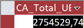
Sa requête donne le même chiffre d’affaires que celles de Marc et Maxim.
3 - Chiffre d'affaires annuel des desserts et boissons
Objectif
On cherche le chiffre d'affaires annuel des catégories Desserts et Boissons réunies.
Notre démarche
On commence par retrouver les produits appartenant à ces deux catégories.
SELECT
Produit.NomProd,
Categorie.NomCateg
FROM
Categorie
INNER JOIN Produit
ON Categorie.CodeCateg = Produit.CodeCateg
WHERE
Categorie.NomCateg = "Desserts"
OR Categorie.NomCateg = "Boissons";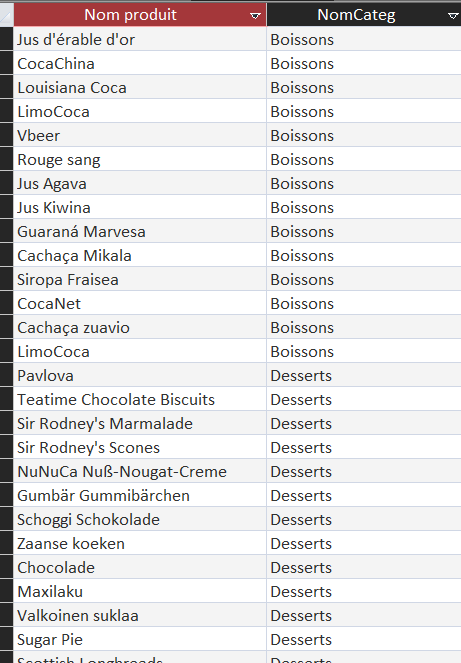
Ensuite, on utilise la date de commande DateCde, la fonction Year pour récupérer l'année et GROUP BY pour regrouper les montants par année.
Requête finale
SELECT
Year(Commande.DateCde) AS Annee,
SUM(
DetailCommande.Quantité
* Produit.CoutAchat
* Categorie.CoefMarge
* (1 - DetailCommande.[Remise (%)])
) AS CA_Total
FROM
((Commande
INNER JOIN DetailCommande
ON Commande.[N° commande] = DetailCommande.[N° commande])
INNER JOIN Produit
ON DetailCommande.[Réf produit] = Produit.RefProd)
INNER JOIN Categorie
ON Produit.CodeCateg = Categorie.CodeCateg
WHERE
Categorie.NomCateg = "Desserts"
OR Categorie.NomCateg = "Boissons"
GROUP BY
Year(Commande.DateCde);Résultat obtenu
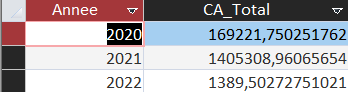
Le tableau présente le montant des ventes de ces deux catégories pour chaque année enregistrée dans la base. Le résultat de 2021 est beaucoup plus élevé que ceux de 2020 et 2022.
Méthode de Killian (sans les remises)
Killian a regroupé le chiffre d’affaires par année avec Year et GROUP BY, mais sa requête ne soustrait pas les remises : ce calcul est donc différent de celui de Marc.
SELECT Year(Commande.DateCde) AS Annee,
SUM(DetailCommande.Quantité * Produit.CoutAchat
* Categorie.CoefMarge) AS CA_Annuel_Sante
FROM (((Commande
INNER JOIN DetailCommande
ON Commande.[N° commande] = DetailCommande.[N° commande])
INNER JOIN Produit
ON DetailCommande.[Réf produit] = Produit.RefProd)
INNER JOIN Categorie
ON Produit.CodeCateg = Categorie.CodeCateg)
WHERE Categorie.NomCateg LIKE "*dessert*"
OR Categorie.NomCateg LIKE "*boisson*"
GROUP BY Year(Commande.DateCde)
ORDER BY Year(Commande.DateCde);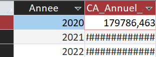
Les dièses viennent de l’affichage trop étroit dans Access : les montants de 2021 et 2022 ne sont pas lisibles sur la capture. On ne les reprend donc pas ici.
4 - Produits carnés non commandés
Objectif
On cherche le nombre de produits carnés qui n'apparaissent dans aucune commande. Marc et Maxim ont choisi des catégories différentes, ce qui explique leurs résultats distincts.
Méthode de Marc : catégorie Viandes
Marc a retenu la catégorie Viandes (CodeCateg = 6). La première requête permet de retrouver les produits concernés.
SELECT
Produit.NomProd
FROM
Produit
WHERE
Produit.CodeCateg = 6
AND Produit.RefProd NOT IN (
SELECT [Réf produit]
FROM DetailCommande
);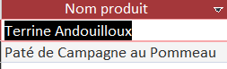
Il reste ensuite à compter les produits avec COUNT.
SELECT
COUNT(*) AS NbProduits
FROM
Produit
WHERE
Produit.CodeCateg = 6
AND Produit.RefProd NOT IN (
SELECT [Réf produit]
FROM DetailCommande
);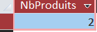
Marc : 2 produits
Méthode de Maxim : viandes et poissons
Maxim a inclus les produits des catégories Viandes et Poissons et fruits de mer. Il a utilisé LEFT JOIN et IS NULL pour ne garder que les produits absents des commandes.
SELECT
COUNT(Produit.RefProd) AS Nb_Produits_Carnes_Non_Commandes
FROM
(Produit
INNER JOIN Categorie
ON Produit.CodeCateg = Categorie.CodeCateg)
LEFT JOIN DetailCommande
ON Produit.RefProd = DetailCommande.[Réf produit]
WHERE
(Categorie.NomCateg LIKE "*viande*"
OR Categorie.NomCateg LIKE "*poisson*")
AND DetailCommande.[N° commande] IS NULL;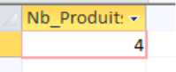
Maxim : 4 produits
Cette différence vient du périmètre retenu : Marc a compté uniquement les viandes, tandis que Maxim a aussi inclus les poissons.
Méthode de Killian : viandes et poissons
Killian a également choisi les catégories Viandes et Poissons et fruits de mer, avec LEFT JOIN et IS NULL pour compter les produits absents des commandes.
SELECT COUNT(Produit.RefProd) AS Nb_Produits_Carnes_Non_Commandes
FROM (Produit
INNER JOIN Categorie ON Produit.CodeCateg = Categorie.CodeCateg)
LEFT JOIN DetailCommande
ON Produit.RefProd = DetailCommande.[Réf produit]
WHERE (Categorie.NomCateg LIKE "*viande*"
OR Categorie.NomCateg LIKE "*poisson*")
AND DetailCommande.[N° commande] IS NULL;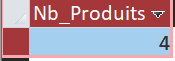
Ce résultat rejoint celui de Maxim ; Marc obtenait 2 en se limitant à la catégorie Viandes.
5 - Clients pilotes et partenaires
Objectif
On cherche à savoir si certains clients pilotes ont passé autant de commandes que l'ensemble de leurs clients partenaires.
Étape 1 : compter les commandes de chaque client
On utilise une jointure entre Clientele et Commande et on enregistre cette requête sous le nom Q5_NbCommandes.
SELECT
Clientele.CodeCli,
COUNT(Commande.[N° commande]) AS NbCommandes
FROM
Clientele
LEFT JOIN Commande
ON Clientele.CodeCli = Commande.CodeCli
GROUP BY
Clientele.CodeCli;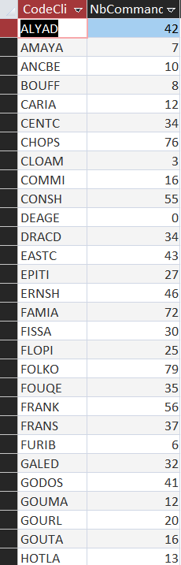
Étape 2 : compter les commandes des partenaires
On regroupe les clients par CodeCliPart pour calculer le total des commandes de leurs partenaires. On enregistre cette requête sous le nom Q5_NbReseau.
SELECT
Clientele.CodeCliPart AS CodePilote,
SUM(Q5_NbCommandes.NbCommandes) AS NbCommandesPartenaires
FROM
Clientele
INNER JOIN Q5_NbCommandes
ON Clientele.CodeCli = Q5_NbCommandes.CodeCli
WHERE
Clientele.CodeCliPart IS NOT NULL
GROUP BY
Clientele.CodeCliPart;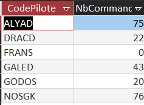
Étape 3 : comparer les deux résultats
La requête finale compare les commandes du pilote à celles de ses partenaires et ne garde que les valeurs égales.
SELECT
[Q5_NbReseau].CodePilote,
[Q5_NbCommandes].NbCommandes,
[Q5_NbReseau].NbCommandesPartenaires
FROM
[Q5_NbReseau]
INNER JOIN [Q5_NbCommandes]
ON [Q5_NbReseau].CodePilote = [Q5_NbCommandes].CodeCli
WHERE
[Q5_NbCommandes].NbCommandes =
[Q5_NbReseau].NbCommandesPartenaires;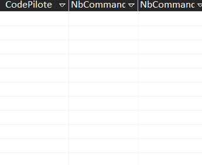
Aucune correspondance
La requête renvoie une table vide : aucun client pilote n'a exactement autant de commandes que l'ensemble de ses partenaires. Par exemple, le pilote ALYAD compte 42 commandes, contre 75 pour ses partenaires.
Conclusion
Ces quatre analyses permettent de mieux comprendre les ventes, les produits et les relations entre les clients de KDou. Elles montrent aussi l'importance de bien choisir les conditions et les catégories utilisées dans les requêtes.